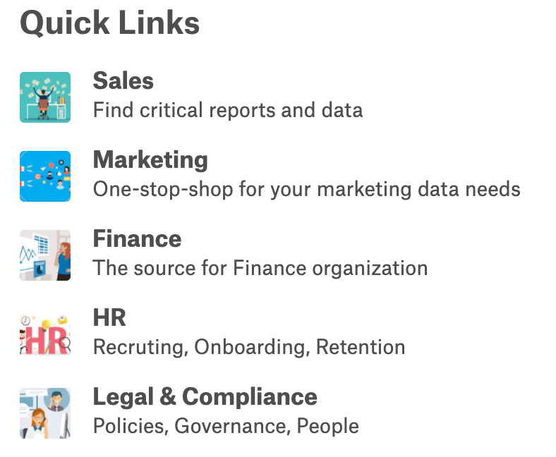
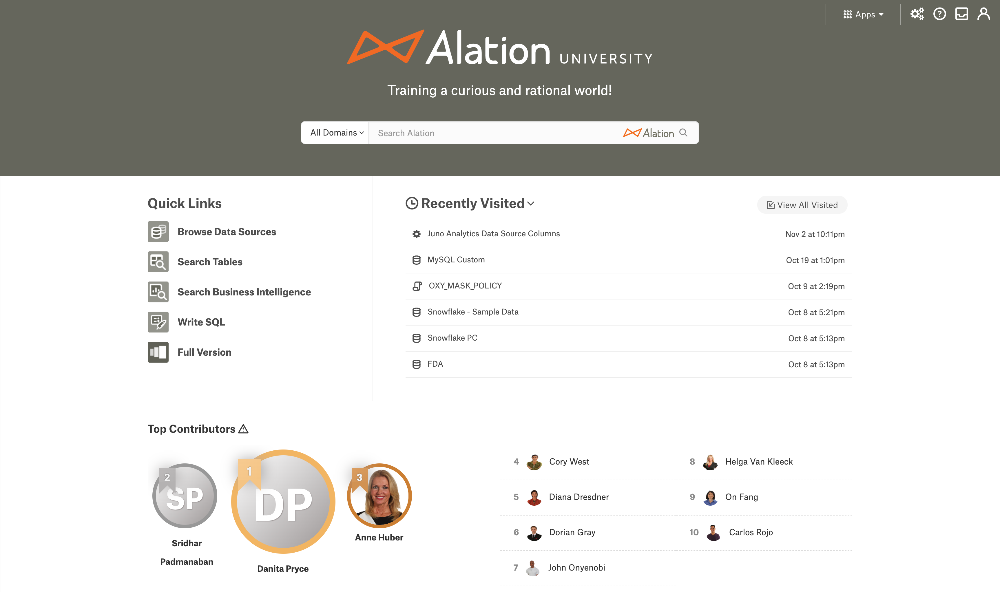

Customize Homepage - 2020.3 to 2022.2¶
Alation Cloud Service Applies to Alation Cloud Service instances of Alation
Customer Managed Applies to customer-managed instances of Alation
Applies from version 2020.3 to 2022.2
Overview¶
The Customizable Homepage feature enables Server Admins and, starting in 2022.1, Catalog Admins to customize the Alation homepage using a number of configurable elements such as a logo, headline and background color of the search banner, Quick Links, Custom Link Lists, and Object Preview Windows.
The Alation Catalog homepage can be customized to highlight specific Catalog content and to increase discoverability of the Catalog information.
The default homepage includes the following sections:
Search Banner: Features the Alation logo, headline, and a search box on a dark blue background (defaults to Alation branding).
Quick Links: A list of action links.
Recently Visited/Starred/Watching: A list of catalog pages a user has visited, starred, or is watching.
A customized homepage can include the following additional custom sections:
Alert Banner: An alert message with customizable appearance and text that appears directly below the search banner. Available from 2022.1.
Curated Link Lists: Lists of links configured to be present on the homepage (optional).
Object Preview Windows: Preview windows for supported Alation objects configured to be present on the homepage (optional).
Default Homepage:
Customized Homepage:
Customization options for the homepage sections are listed below:
Section |
Required |
Customizable |
|---|---|---|
Search Banner |
Yes |
Yes |
Quick Links |
Yes |
Yes |
Recently Visited/Starred/Watching |
Yes |
No |
Custom Content:
|
No |
Yes |
Alation Analytics V2 Leaderboard (from 2021.4) |
No |
No |
Note
The Recently Visited/Starred/Watching section cannot be modified.
You cannot change the order of the sections. It is always:
Search banner on top
Alert banner (if added) directly under the search banner (from 2022.1)
Quick Links on the left under the search banner (and alert banner if added)
Recently Visited/Starred/Watching on the right under the search banner (and alert banner if added)
Curated Content (if added) under Quick Links and Recently Visited/Starred/Watching
It is not possible to hide the Quick Links or Recently Visited/Starred/Watching sections.
Customize Homepage¶
Homepage customization requires the role of the Server Admin or, starting in 2022.1, Catalog Admin.
Catalog Admins: Click on the Settings gear icon in the top right corner. A dropdown menu appears. Click Customize Homepage.
Server Admins: Click on the Settings gear icon in the top right corner. The Admin Settings page appears. Under the Catalog Admin section, click Customize Homepage.
The following sections provide the details of customizing each part of the homepage.
Theme Color¶
Starting in 2022.1, the Background Color setting has been renamed as the Theme Color and given its own section. The theme color applies to icons and tab titles throughout the Catalog. It also affects the search banner’s background if the search banner is configured to use the theme color.
To change the theme color:
In the Theme Color section, hover over the hex code and click the Edit icon next to it.
Enter the hex code of your brand color. A preview of the selected color will be available in the Preview section on the right.
Note
Choosing a dark color provides better readability of the headline and icons throughout Alation.

If the color you entered could make the headline difficult to read, a warning will appear advising you to change the color.
Quick Links and Custom Content¶
It is possible to change the Quick Links menu and include other custom content into the homepage. The Quick Links and the custom content sections are based on a homepage configuration file in the JSON format. You can download the current JSON file from the homepage settings page and then re-upload the customized file after making your changes.
Prior to making any changes to the homepage JSON file, gather the required information for the homepage sections: decide whether you want to replace the default quick links, what to showcase in each custom link list, and which articles or BI reports to include as object preview windows. It may be helpful to gather all of the required links and assets needed in a spreadsheet or a text document so that you can easily assemble the JSON file when you are ready to update the homepage.
Section |
Required Information |
|---|---|
Quick Links |
|
Custom Link Lists |
|
Object Preview Windows |
|
Once all the required information is available, perform the following steps to update the JSON:
On the Home Pages settings page, under Custom Content, click Download Active File to customize the existing contents or click Download Blank Template to download an empty JSON file template.
Modify the JSON of the respective sections based on the instructions in the sections below.
The JSON structure has two sections: action_links and admin_sections. action_links corresponds to the Quick Links. admin_sections can be used to add custom link lists and object preview windows.
Important
The action_links and admin_sections objects must exist in the homepage.json file even if they are empty. If the section is empty in the customized JSON, Alation will display the default configuration for this section.
action_links¶
Quick Links
You can add any number of quick links and in any order in the JSON. The following table describes the link object in the action_links section of the JSON file:
Attribute |
Description |
Sample Value |
|---|---|---|
|
Provide the title to be displayed for the link. |
Browse Data Sources |
|
Provide the path to the image to be used for the quick link. Use images from the homepage image library, which are available in the following path:
|
|
|
Provide the URL of the target page associated with the tile. A relative URL of an Alation page or an external URL can be provided. URLs to Alation pages require a backslash at the beginning and end. |
|
|
Starting in 2022.2, optionally provide a value of true or false to indicate whether the link should open in a new tab. If this attribute is not present, the link will open in the same tab. |
true |
Sample JSON for Quick Links:
{
"action_links": [
{
"title": "Browse Data Sources",
"img": "/static/img/homepage_images/static_actions/BrowseDataSources.png",
"navigateURL": "/sources/"
},
{
"title": "Search Tables",
"img": "/static/img/homepage_images/static_actions/SearchTables.png",
"navigateURL": "/search/?otype=table&q=",
"openInNewTab": false
}
]
}
admin_sections¶
Custom Link Lists and Object Preview Windows

{kind=link}
You can add any number of link lists and object preview windows in any order in the JSON.
Custom Link List¶
The following table describes the custom link list object in the admin_sections JSON structure. A custom link list object contains several attributes and an array of link objects.
Attribute |
Description |
Sample Value |
|---|---|---|
|
Provide the type of link list. Only |
carousel |
|
Provide the title of the link list. |
|
|
Provide the description to be displayed for the link list. |
|
|
An array of link objects. See below for the link object description. |
Link¶
The following table describes the link object in the custom link list’s tiles array. Each link object represents a single link inside a custom link list.
Attribute |
Description |
Sample Value |
|---|---|---|
|
Provide the title to be displayed for the link. |
Browse Data Sources |
|
Provide the path to the image to be used for the quick link. Use images from the homepage image library, which are available in the following path:
|
|
|
Provide the URL of the target page associated with the tile. A relative URL of an Alation page or an external URL can be provided. URLs to Alation pages require a backslash at the beginning and end. |
|
|
Starting in 2022.2, optionally provide a value of true or false to indicate whether the link should open in a new tab. If this attribute is not present, the link will open in the same tab. |
true |
|
Provide the description to be displayed for the link. |
Object Preview Windows¶
The following table describes the object preview window object in the admin_sections JSON structure.
Attribute |
Description |
Sample Value |
|---|---|---|
|
Provide the type of supporting object. The supported types are:
|
article |
|
Provide the object ID of the object.
Locate the OID in the Alation URL for the object page. For example,
for an article with the URL
|
878 |
|
Use optionally to display an object preview at full-page width. When this attribute is not included, the object preview will appear at half-page width (default). |
true |
|
Specify the type of the object as |
object_window_row |
Sample JSON for Link Lists and Object Preview Windows:
"admin_sections": [
{
"type": "carousel",
"title": "Curated by Your Admins",
"description": "Find links to helpful pages",
"tiles": [
{
"title": "Useful Content",
"img": "/static/img/homepage_images/colored_images/BGPurple.png",
"navigateURL": "/query/1/",
"openInNewTab": true,
"description": "This is the simplest query",
"expandDescriptions": true
},
{
"title": "An article about Docker",
"img": "/static/img/homepage_images/colored_images/BGYellow.png",
"navigateURL": "/article/4/",
"description": "Overview of Docker API",
"expandDescriptions": false
}
]
},
{
"type": "object_window_row",
"objects": [
{
"otype": "article",
"oid": 3
},
{
"otype": "article",
"oid": 4,
"full_width": true
}
]
}
]
Use Custom Thumbnail Images¶
Along with the default images available in the Alation library, it is possible to use custom thumbnail images for Quick Links and Custom Link Lists. To use custom thumbnail images:
Create an article in Alation with the custom images added to the body of the article and save it.
Right-click on an image and click Copy Image Address or Copy Image Location (name of the command depends on the browser). This copies the full URL of the image, for example:
http://alation-test.com/media/image_bank/2020-08-31-20-08-32-637138-00-00-b6417d34-6b1c-4b05-bb22-77bf328c3baf.pngUse the copied address as the value of the
imgproperty of the objectsaction_linksor tile objectsadmin_sections, for example:"action_links": [ { "title": "Browse Data Sources", "img": "http://alation-test.com/media/image_bank/2020-08-31-19-54-24-349633-00-00-1a65f9c7-7024-44e1-ab09-f7b85395dd47.png", "navigateURL": "/sources/", "otype": "sources" } ]
Note
On the homepage, images are automatically resized and cropped to a square ratio to be displayed at the size of 50x50 pixels. It is recommended to use bigger size images (for example, 100x100 pixels) for best appearance on high resolution monitors.
Upload to Alation¶
Scroll down to the bottom of the Home Pages settings page. Under 3. Upload Customized JSON File, drag and drop the JSON file into the designated area or click in the area to select the file from your computer. The newly included changes will be instantly applied to the homepage.
Alation Analytics V2 Leaderboard on Homepage¶
Applies from version 2021.4
The Top Contributors report, also known as the Leaderboard, that is available on the Built In tab of the Alation Analytics Dashboard can be embedded onto the Alation Homepage. The embedded view will always display the Showcase view with the default filter settings. That is, it will show the top contributors for the last two months for all data catalog users.

Adding the Leaderboard requires that the Alation Analytics application is enabled and used in your Alation Catalog. The Leaderboard data gets updated after every Alation Analytics ETL.
Before you add the Leaderboard, make sure that:
The following feature toggles are enabled in Admin Settings > Feature Configuration:
Alation 2020 Homepage
Alation Analytics V2
Alation Analytics V2 Leaderboard
Alation Analytics V2 data source should be initialized successfully and ETL should run on schedule.
To add the Leaderboard to the Homepage:
Add the following JSON object to the
admin_sectionsobject in the active JSON file and save the file. The Leaderboard object can be inserted before thetilesobject, after thetilesobject but before theobjectsobject, or after theobjectsobject. This position will define where it will appear on the Homepage—on top, in the middle, or on the bottom of the customizable sections.{ "type": "analytics_leaderboard_row", "objects": ["top_contributors"] },
Note
The leaderboard can only be added to the admin section and can be placed in any location within the Admin Section. The order or position it is placed within the admin section will determine its order or position in the UI or Homepage view.
Example:
In the example below, the Leaderboard object is inserted before the
tilesobject in theadmin_sectionsobject.
Upload the modified Active JSON file in the Upload Customized JSON File section.
Go to the Homepage and check that the Leaderboard is displayed.
Remove the Leaderboard¶
If you want to remove the Leaderboard from the Homepage:
Download the Active JSON File.
Remove the Leaderboard JSON from the active JSON file.
{ "type": "analytics_leaderboard_row", "objects": ["top_contributors"] },Upload the modified active JSON file in the Upload Customized JSON File section.
Go to Homepage and check that the Leaderboard is removed.
Enable or Disable the Alation Homepage¶
If the homepage is not required, you can disable it and use the older version of the homepage. Once you disable the Alation Homepage, the user cannot see the co-branded search or navigate to the Quick Links and the Recently Visited pages.
To enable or disable the homepage:
Go to Admin Settings > Feature Configuration > Enable the 2020 Alation Homepage.